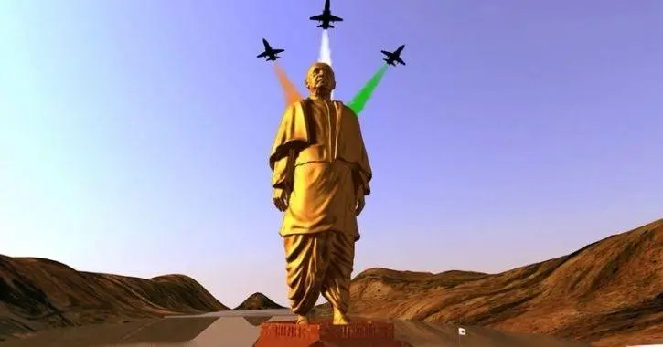
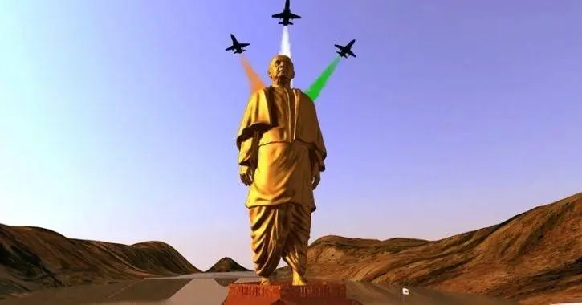

Place of Birth - Nadiad, Gujarat
Parents - Jhaverbhai Patel & Laad Bai
Political Party - Indian National Congress
Popularly Known As - The Iron Man of India
Died On - 15 December 1950
.jpg)
Profession
Barrister
Politician
Activist
Freedom Fighter
Leadership Style of Sardar Vallabhbhai Patel
Sardar Patel was one of the leading figures in the country during the Indian freedom movement. Besides contributing a lot to the freedom struggle of India, he also served as the Deputy Prime Minister and Home Minister during the first three years of Indian Independence after 1947 . He was a dignified personality and a unique symbol of integration who truly understood the significance of Unity is Strength
.
Early life and career
Patel travelled to attend schools in Nadiad, Petlad, and Borsad, living self-sufficiently with other boys. He reputedly cultivated a stoic character. A popular anecdote recounts that he lanced his own painful boil without hesitation, even as the barber charged with doing it trembled. When Patel passed his matriculation at the relatively late age of 22, he was generally regarded by his elders as an unambitious man destined for a commonplace job. Patel himself, though, harboured a plan to study to become a lawyer, work and save funds, travel to England, and become a barrister.Patel spent years away from his family, studying on his own with books borrowed from other lawyers, passing his examinations within two years. Fetching his wife Jhaverba from her parents' home, Patel set up his household in Godhra and was called to the bar. During the many years it took him to save money, Patel now an advocate earned a reputation as a fierce and skilled lawyer. The couple had a daughter, Maniben, in (1903) and a son, Dahyabhai, in (1905). Patel also cared for a friend suffering from the Bubonic plague when it swept across Gujarat. When Patel himself came down with the disease, he immediately sent his family to safety, left his home, and moved into an isolated house in Nadiad (by other accounts, Patel spent this time in a dilapidated temple); there, he recovered slowly.
.jpg) 
